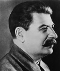

Joseph Stalin (1879–1953), 1922-1953 yılları arasında Sovyetler Birliği’nin lideriydi. Tarihin en büyük diktatörleri arasında yer almaktadır. Onun döneminde komünist bir ütopya inşa etmek adına 20 milyona yakın insan öldürülmüştür.

Buna rağmen pek çok Rus, onu Sovyet endüstrisini kuran, SSCB’yi süper güç haline getiren ve II. Dünya Savaşı yıllarında ülkesini Adolf Hitler (1889–1945) karşısında zafere götüren lider olarak hatırlamaktadır. Rusların üçte birinden fazlası 2003 yılında yapılan bir araştırmada onun iyiliklerinin yaptığı kötü şeylerden daha fazla olduğunu söylemiştir.
Gürcistan’da doğan Stalin’in asıl adı Iosif Vissarionovich Dzhugashvili’dir. Eskiden serf olan bir kunduracının oğluydu. “Stalin” takma adını yıllar sonra devrimci politikaya atılınca almıştır. Stalin, Vladimir Lenin’in (1870–1924) sadık bir destekçisiydi. Devrimci mücadeleye maddi olarak destek çıkmak için ilk başlarda banka soygunları bile organize etmiştir.
1917 yılında Rus Devrimi başlayınca komünist gazete Pravda’nın başına getirildi. Lenin ölünce rakibi Leon Troçki’yi (1879–1940) sürgüne göndererek ülkenin lideri oldu. SSCB’yi sanayileştirmek için uğraştı. Batı’yı yakalamak için tasarlanan beş yıllık planları yürürlüğe soktu. Ancak planlar sanayi üretimini arttırsa da büyük olumsuzluklara yol açtı. Özel mülkiyet olan toprakların kolektif çiftliklerde toplanmasından kaynaklanan kıtlıklar milyonlarca insanın ölümüne neden oldu.
Stalin 1930’larda şova dönüşen yargılamalar yaptı. Rakiplerinin idamıyla sonuçlanan bu yargılamalar gücünü pekiştirmesini sağladı. Bu süreçte bir milyona yakın insanın kurşuna dizilmiş olabileceği tahmin edilmektedir. Stalin bir kişi kültü yaratarak insanların Sovyet yurtseverliğinin kişileşmiş hali olarak onu görmesini sağladı.
1939 yılında Hitler’le bir barış antlaşması imzaladı, fakat iki yıl sonra Hitler Rusya’yı işgal edince antlaşma bozuldu. Savaşın Sovyet Ordusu’na bedeli ağır oldu. Rus Ordusu, II. Dünya Savaşı sırasında Almanya’ya karşı verilen mücadelede diğer Müttefikler’e kıyasla çok daha fazla kayıp verdi. Savaştan sonra Stalin, Kızıl Ordu tarafından Nazi işgalinden kurtarılan Doğu Avrupa’daki bölgelerde komünist hükümetler kurdu. Soğuk Savaş’ın ilk dönemlerinde Sovyet politikasını şekillendirdi. 1953 yılında yetmiş dört yaşındayken öldü.
Ek Bilgiler
1- 2007 yılında Moskova’da Stalin kurbanları için bir anıt açıldı.
2- Nobel barış ödülünün komünist versiyonu olan Sovyet barış ödülü Stalin’in adıyla veriliyordu. Ödülü kazananların arasında Amerikalı aktör Paul Robeson (1898–1976), Şilili şair Pablo Neruda (1904–1973) ve Alman oyun yazarı Bertolt Brecht (1898–1956) de vardır. Stalin’in ölümünden sonra ödülün adı değiştirildi.
3- Stalin’in halefi Nikita Kruşçev (1894–1971), 1956 yılında Stalin’in kişi kültünü reddeden bir konuşma yaptı. Konuşma Sovyet tarihinde bir dönüm noktasıydı. Böylece diktatör nihayet eleştirilebilir hale geliyordu. Bu konuşmayla birlikte SSCB’de destalinizasyon süreci başlamış oldu.